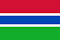

Na téma Maroonového tlačítka
Moment, není tohle Červené tlačítko? Proč jsou tady vlajky?
Obrazovka cykluje pět různých vlajek. Jedna z těchto vlajek, A, je z jiného kontinentu, než ostatní. Seřaďte ty čtyři ostatní vlajky podle jejich zeměpisné šířky v tabulce níže a podle toho, jakým směrem obrazovka cykluje. Pokud obrazovka cykluje zleva doprava, seřaďte je od severu k jihu. Pokud obrazovka cykluje zprava doleva, seřaďte je z jihu k severu. Stiskněte tlačítko, když jsou všechny vlajky v tomto pořadí označeny. Stiskněte A jako poslední, bez ohledu na jeho zeměpisnou šířku. Pokud je ale poslední cifra sériového čísla sudá, stiskněte A jako první.
| Vlajka | Země | Kontinent | Zeměpisná šířka |
|---|---|---|---|
 | Alžírsko | Afrika | 28,0339° S |
 | Senegal | Afrika | 14,4974° S |
|  | Gambie | Afrika | 13,4432° S |
 | Angola | Afrika | 11,2027° J |
 | Japonsko | Asie | 36,2048° S |
 | Jižní Korea | Asie | 35,9078° S |
 | Čína | Asie | 35,8617° S |
 | Indie | Asie | 20,5937° S |